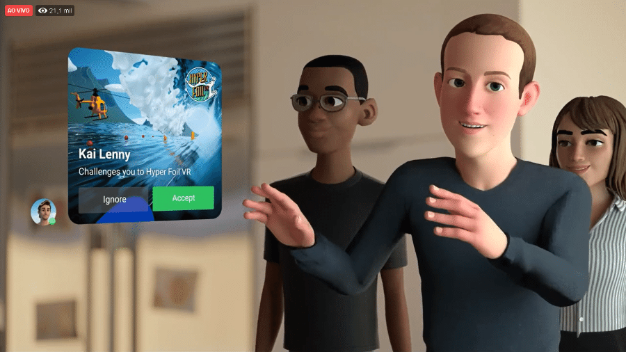

Um dos assuntos mais comentados nos últimos meses é o metaverso. O conceito, em alta deste que o Facebook anunciou a troca do nome para Meta, em outubro de 2021, é visto como um futuro próximo que trará diversas mudanças no nosso cotidiano e até mesmo na maneira de fazer negócios. Mas afinal, o que é o metaverso? Como ele vai funcionar? Como faremos para ingressar nessa nova realidade? Tilt preparou uma reportagem para te explicar tudo sobre esse mundo virtual.
Basicamente, metaverso é um conceito que mescla realidade aumentada e ambientes virtuais. Ele pode ser entendido como uma vivência em um espaço virtual, mas com influências da vida real nesse universo.

O termo metaverso não é novo. Ele surgiu há dez anos com a obra de Neal Stephenson chamada "Snow Crash", que sincroniza realidade e ficção através de um jogo onde um entregador de pizza na vida real é um samurai no universo virtual chamado "metaverso". O livro de ficção cientifica foi o ponto de partida para o surgimento de diversos jogos como Second Life, Roblox, Fortnite e Minecraft, onde jogadores podem criar vidas paralelas em um ambiente virtual.
No ano passado, o termo e o assunto de "vidas na internet" ganhou destaque após Mark Zuckerberg, presidente-executivo do Facebook, modificar o nome de sua empresa e afirmar que o metaverso é o futuro da internet e da tecnologia em nossas vidas. A empresa afirma que investiu US$ 50 milhões neste novo segmento, e disse que planeja testar universos digitais nos próximos dois anos e desenvolver aplicações de multiverso entre 2031 e 2036.
Soluções de tecnologia, como realidade virtual e simuladores em 3D são exemplos mais simples de aplicação. Os entusiastas dizem que o metaverso afetará as mais variadas áreas de nossas vidas. Segundo especialistas, a medicina é um dos segmentos com grande potencial para o uso das novas tecnologias e várias possibilidades estão sendo desenvolvidas, como: cirurgias à distância, cursos em que os alunos não precisam de corpos reais para aprendizado, roupas que podem avaliar situações corporais como a temperatura e nível de transpiração, são algumas já levantadas.
Já no universo corporativo, o uso do metaverso vai desde reuniões interativas (real com virtual), até treinamentos especializados realizados à distância e de maneira totalmente virtual — o que diminuiria e muito os custos de uma empresa.